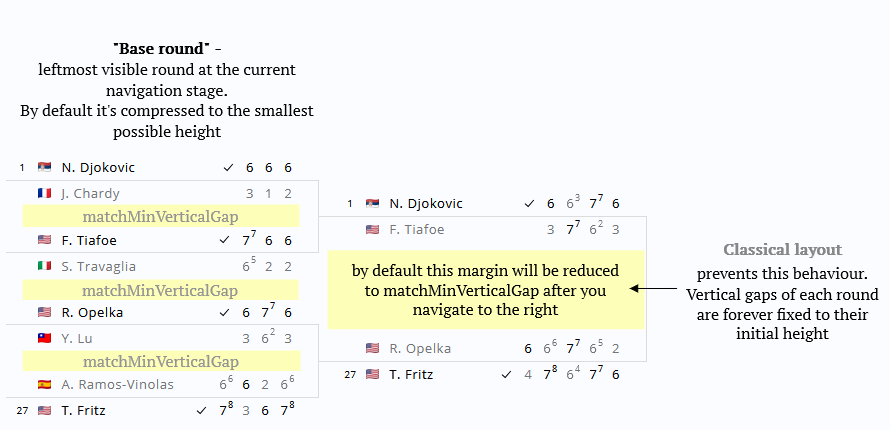

Options can be passed to createBracket as a 3rd argument
import { createBracket } from 'bracketry'
const wrapper = document.querySelector('#your-wrapper-element')
const data = { ... } // data of specific shape
const options = {
matchMaxWidth: 200
}
createBracket(data, wrapper, options)Options can be changed later via applyNewOptions lifecycle method
...
const { applyNewOptions } = createBracket(data, wrapper, options)
applyNewOptions({
matchMaxWidth: 100
})
Options passed to applyNewOptions will not replace the original ones (passed to createBracket) but will be
merged.
Some options are not updatable (ignored when passed to applyNewOptions):
- "verticalScrollMode"
- function options (such as "getMatchElement")
The most likely case for applyNewOptions is handling different screen sizes. (You
may respond to resize by setting more "compact" bracketry layout)
Use getUserOptions method to get current options.
When set to true, it instructs bracketry to preserve the original vertical margins between matches when navigating
between rounds.

By default bracketry tries to be smart and display matches in a most condensed way. For that it reduces
the rounds' height by 2 on each next navigation step (i.e. on each click on the right button).
The "base round" (the leftmost visible one) always attains the smallest possible height.
Margins between matches of a base round are defined by matchMinVerticalGap.
Therefore each time the "base round" changes (i.e. user navigates left or right) all vertical margins are
redefined.
{ useClassicalLayout: true } cancels this smart behaviour and leaves the margins as they are.
useClassicalLayout might be useful if you want to render bracket with 'auto' (full) height.
In such case you should set NO height on your wrapper element and set useClassicalLayout to true. Read more here.